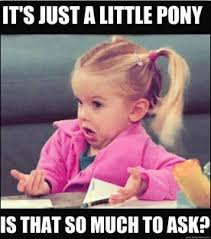

Raise your hand - who’s feeling like something’s missing?
How you doin’ with love, friends, sex and connection? How about purpose? Who needs more money, health, or fun? Or enlightenment- you wouldn’t turn that away, right? Or maybe just a little treat, a reward- a glass or three of wine, more books, bag of chips, full Oreo sleeve, another new pair of shoes?
I mean, when was the last time you felt 100% complete, satisfied, so totally whole that absolutely nothing, nothing, could possibly make it better?
Right.
Oh it’s tough being human.
Something is always missing.
No matter how many books we buy.
And sometimes our sense of lack feels very strong, not ignorable. More often though, it’s a vague, barely noticed, not definable, sense.
Whatever that is.
Something is Not. Quite. Right.
Always.
So naturally we try to pin it down. We call it loneliness and long for a partner to fix it. We assume we’re damaged and turn to therapy or inquiry to fix it. We think we’re not busy enough, successful enough, socially conscious enough, in which case productivity, money, or selfless acts of kindness will fix it.
And any or all of that might indeed quiet that sense of not-enoughness for a brief while. Though usually, very brief.
Because regardless of what all those love-yourself books in the positive-thinking section say,
To be human is to be incomplete. The self feels like it’s not enough because it isn’t enough.
Inherently.
Which makes sense, if only because, how could nothing ever be enough?
Turns out that the certainty that we're a separate distinct self feels like constant loss, missing out, denied access.
Which of course feels empty and disconnected.
Naturally we're going to want to fill up that emptiness with connection.
Though, because we don't have it, will have to be sought elsewhere. Somewhere other than, or outside, the self.
In another person, or thing, or idea. In a loving family, a better body, enlightenment, or wine.
None of which ever truly quenches the thirst.
So it starts to be clear, though this is usually unacknowledged, that we know the separate self is an illusion. We feel it. We feel the lack in this Me, and in other Me’s too, and in every Me-we-think-we-are.
And we hope that somewhere out there is our wholeness- our tribe, our true selves, our fullness. If only we can get the right magic to connect with it.
Yoooooo hoooooo.
It’s all we ever want. We seek it constantly.
This seeking is hidden in everything we do. Longing for connection with vastness, craving reconnection to enormity, truth, the not-pretend.
We yearn to get back to the garden.
We think we have left the garden.
Because we apply the same idea of separateness and distinctness of the self, to the vast wholeness.
So we come to think that everything is included in the vast except bad, inadequate, not-enough us.
Though that would make completeness not so dang complete now, wouldn’t it?
No, completeness leaves nothing out, including inadequate us. Our individuality is absorbed into it.
We are already included at the wholeness party.
Realized or not.
Whooo hooo!
This is great news. Because it means the insufficient self does not have to be obliterated, or shifted, or killed off, or even transcended.
Which many seekers may find comforting. Especially in light of all those gurus saying the self has to die.
And also because it means that completeness,
being already here,
does not have to chased or attained.
Lucky us. We don't have to work so darned hard, and we get to have both- the sense of individual selfhood, and also the absolute completeness.
This leaves us with nothing to seek.
Because nothing is missing.
Unless maybe it’s the sense
of missing
something.
And that,
I'm pretty sure,
won't be missed,
and we might be just as happy to
exclude.
every week.
